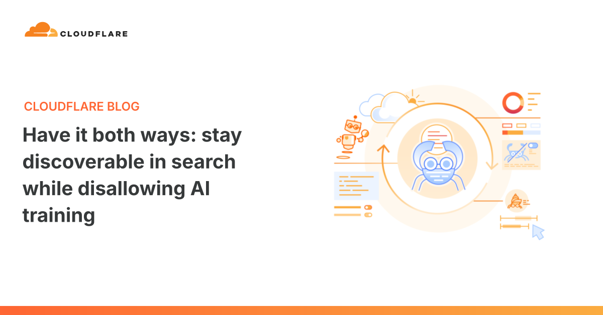

科技產品 T1

Cloudflare 官方文章配圖，非實際儀表板截圖 Cloudflare；權利屬原作者
續報｜Cloudflare 推出「禁止 AI 訓練」設定，網站可保留搜尋索引並遷移舊爬蟲控制
發佈時間
Cloudflare｜AI Crawl Control／Disallow AI Training
網站主可禁止資料供 AI 訓練，同時讓配合新偏好機制的搜尋爬蟲繼續索引；既有設定依 Cloudflare 遷移表轉換。
- 新 `Disallow AI Training` 設定保留搜尋索引通道，並把訓練拒絕偏好寫入網站控制。
- 舊 `Block AI Bots` 將由更細分的 Search、Training、Agent 控制取代，舊 Managed Robots.txt 遷移至 Bot Preference Sync。
- 新廣告營利網域可採較嚴格建議配置；非廣告網域、既有客戶與自行變更設定者不適用單一統一預設。
完整報告收合報告
事件背景與影響
過去同一爬蟲兼做搜尋與模型訓練，網站若完全封鎖可能失去搜尋能見度。新控制試圖讓「被搜尋到」與「被訓練」分開，但實際效果仍取決於爬蟲營運者是否遵守偏好及網站配置。
事件與發佈依據
Cloudflare 9/15 官方 Product News 的 `What changes on September 15?` 與既有網域遷移表，明列新設定、舊控制停用及新網域配置；不是把 7 月預告改稱新品。
收錄紀錄
前次 2026-07-02 已收錄 Search／Agent／Training 控制、BotBase 及 9/15 預告。本次新內容是 `Disallow AI Training` 具體設定、mixed-use crawler 對搜尋與訓練的分離，以及舊 `Block AI Bots` 和 `Managed Robots.txt` 遷移。
尚待確認
Apple、Google、Microsoft 的遵守承諾與時程不同；不能宣稱所有爬蟲已全面尊重拒絕訓練。設定依網域類型與業主選擇而異。
相關實體與概念
Cloudflare、AI Crawl Control、Disallow AI Training、Bot Preference Sync、mixed-use crawler、robots.txt、搜尋索引。
科技產品 T2
OpenAI 推出 ChatGPT Work Data agent，讓企業資料分析與互動儀表板在對話中完成
發佈時間
OpenAI｜ChatGPT Work Data agent
Data agent 可連接組織核准的資料源，用自然語言調查指標變化、建立可分享的互動儀表板，並在授權工具中提出後續動作。
- 官方列舉 BigQuery、Databricks、Snowflake、Redshift、MongoDB 等核准資料源，以及 Drive／SharePoint 文件背景。
- 管理員選擇可用的資料連線與角色；查詢遵守來源帳號的表、列、欄存取限制。
- Data agent 在 ChatGPT Work Plugins 目錄以 Data 項目提供，組織可安裝後使用 `@Data` 提問。
完整報告收合報告
事件背景與影響
它把傳統等候分析師查詢或製作報表的流程變成可反覆追問的工作對話。不過企業資料的正確解讀仍仰賴語意定義、管理員核准連線及原資料權限，不能把生成的圖表當成無需審核的事實。
事件與發佈依據
OpenAI 9/10 官方 Product 公告首次介紹 Data agent，明示在 Plugins 目錄提供安裝與管理員權限配置；只採發布日期，不虛構時分。
收錄紀錄
以 ChatGPT Work、Data agent 及官方網址窄搜完整歷史無同一產品變更，才讀最近 7 天 14 列產品表；無命中，首次收錄。
尚待確認
官方客戶案例包含 Alpha 計畫；個別組織的可用性、資料源與動作能力由管理員及連線授權決定，不保證所有使用者預設開通。
相關實體與概念
OpenAI、ChatGPT Work、Data agent、企業資料、互動儀表板、語意層、權限治理。
科技產品 T3
OpenAI Agents API 開放公開測試，開發者可託管 Codex 式雲端代理
發佈時間
OpenAI｜Agents API
Agents API 把長時間代理執行的工具、環境、檔案、上下文與子代理編排包成由 OpenAI 託管的公開測試介面。
- 官方定位為使用 Codex harness 的雲端代理開發與執行 API。
- 公告稱支援長時間工作、工具使用、環境與子代理協調。
- 本篇不填未獨立核對的使用價格、上限或正式上市日期。
完整報告收合報告
事件背景與影響
開發者可少建一部分代理執行基礎設施，但工作資料、權限、成本與長程任務失敗恢復仍需要具體設計。公開測試代表介面及限制可能變更，不宜視為成熟且無限制的正式供應。
事件與發佈依據
OpenAI 9/10 官方 Product API 公告明示 `public beta` 及雲端 Codex harness，屬新開發者 API 入口，不是一般 Codex 介面教學。
收錄紀錄
以 OpenAI、Agents API、Codex harness 窄搜完整產品表與歷史日報／來源筆記無同一變更；再核對最近 7 天 14 列，首次收錄。
尚待確認
目前為 public beta；實際支援區域、權限、定價與限制應依後續官方文件及帳戶可見狀態核對。
相關實體與概念
OpenAI、Agents API、Codex harness、cloud agents、工具編排、公開測試。
全球焦點 1
 全球新聞主題配圖，非事件照片 NASA／Unsplash
全球新聞主題配圖，非事件照片 NASA／Unsplash
續報｜沙烏地暫停燕布裝船並取消部分歐洲原油貨單，波蘭煉油商尋找替代來源
發佈時間
管線風險開始變成具體交貨缺口，波蘭 Orlen 尋找北海、美國及其他原油來源；Saudi Aramco 未對 Reuters 評論。
- 業界來源稱部分 9 月裝船原油貨單取消，燕布裝船暫停。
- Orlen 表示會調整採購以維持煉廠運作；具體交易細節未公開。
- Reuters 引 LSEG 數據：Brent 期貨近 108 美元，歐洲現貨基準近 122 美元／桶，兩者不是同一價格口徑。
完整報告收合報告
事件背景與影響
此前庫存緩衝僅是預測，貨單變更則直接影響煉油商採購和歐洲現貨價格。確切取消量及停裝期間仍不明，不能把所有沙烏地出口都寫成已停止。
事件與發佈依據
Reuters 9/15 首次披露業界接獲取消貨單及燕布停止裝船消息；轉載首發 9/16 02:46 AEST，台北 00:46，並非引用之後修改時間。
收錄紀錄
前次 2026-09-14 已報沙烏地 East-West pipeline 停運後燕布庫存約可維持 5–7 天及修復估計；本次新內容是部分 9 月歐洲貨單已被取消、燕布裝船暫停與客戶尋求替代原油。
尚待確認
消息來自交易與航運來源；Saudi Aramco 拒評，Reuters 未確認取消貨單總數及停裝期限。不把市場報價等同實際供應損失。
相關實體與概念
沙烏地阿拉伯、Saudi Aramco、East-West pipeline、Yanbu、Orlen、歐洲煉油、原油現貨。
全球焦點 2
立陶宛確認北約戰機擊落一架侵入空域的無人機，來源仍待調查
發佈時間
立陶宛軍方稱這是首次在本國空域擊落無人機，兩名官員推測裝置可能載有爆裂物，但未確認來源與目的。
- 北約戰機夜間在立陶宛空域擊落入侵無人機。
- 官方尚未公布來源與任務目的；可能載爆裂物仍是官員初步說法。
- 同篇報導俄羅斯船隻對丹麥直升機施放干擾火光，屬另一事件，不與本次擊落合併。
完整報告收合報告
事件背景與影響
事件把北約東翼對無人機與混合攻擊的擔憂推到實際空域防衛行動；若未完成鑑定就指認責任方，可能加劇錯誤歸因及外交緊張。
事件與發佈依據
AP 9/15 08:17:24 UTC 報導該日官方確認擊落事件；不是 9/13 雷達鳥群誤報的後續更正。
收錄紀錄
2026-09-14 的立陶宛事件已查明為鳥群、警報解除；本次是另一宗實際入侵與擊落，沒有把舊誤報再收錄。
尚待確認
無人機來源、用途、武器載荷及責任方未獨立確認；不沿用先前鳥群誤報，也不憑推測指責俄羅斯。
相關實體與概念
立陶宛、北約、無人機、空域防衛、波羅的海、事件鑑定。
全球焦點 3
美國空軍首度公開承認已部署在軌「太空控制武器」，技術內容未揭露
發佈時間
美國表示已部署能保護聯合作戰部隊的在軌武器，卻沒有公開系統類型、運作方式、數量或目標。
- Meink 說已部署 `on-orbit space control weapons`。
- 未交代武器是對付其他太空物體，還是與地面目標有關。
- Golden Dome 的未來太空攔截器計畫與這項已部署說法不能直接視為同一系統。
完整報告收合報告
事件背景與影響
這是太空軍事化辯論的重要可查證政策訊號。美國衛星支撐通訊、導航與軍事活動，而在軌武器的功能和合法性必須依實際系統與條約限制分別分析。
事件與發佈依據
空軍部長 Troy Meink 週一會議上的官方公開說法由 AP 9/15 12:16:26 UTC 首次可靠報導，落在視窗內。
收錄紀錄
歷史未收錄本次官方承認已部署在軌武器；此前 Golden Dome 計畫及俄方反衛星警告不等於相同部署節點，首次收錄。
尚待確認
無設備細節可供獨立驗證；1967 年條約禁止核及大規模毀滅武器進入太空等限制，不可簡化成「所有常規在軌武器均已被明確禁止」。
相關實體與概念
美國空軍、Troy Meink、太空控制、反衛星能力、Golden Dome、國際太空法。
全球焦點 4
美國參院以 49 對 50 票阻擋加密貨幣監管法案推進，利益衝突條款成爭點
發佈時間
民主黨拒絕在缺乏更強總統及家屬利益衝突限制下推進業界支持的數位資產監管框架。
- 參院推進法案的投票結果為 49–50；沒有民主黨議員投贊成。
- 民主黨要求限制總統及家屬利用任內加密投資獲益。
- 部分曾支持規範的民主黨人仍稱願意協商。
完整報告收合報告
事件背景與影響
美國加密資產市場尋求全國統一規則，但政治倫理與產業資本的交集使選舉年前立法停滯。程序未通過不等於監管方向已被終局否決。
事件與發佈依據
AP 9/15 13:00:30 UTC 發布當日參院程序表決結果；與既有加密貨幣立法討論不同，採新表決節點。
收錄紀錄
完整歷史無本次 49–50 程序投票，首次收錄。
尚待確認
目前是程序阻擋，修正案、重新提案及後續談判仍可能發生；AP 引述的市場規模為估計值而非本次表決效果。
相關實體與概念
美國參院、加密資產、數位資產監管、Donald Trump、利益衝突、程序表決。
全球焦點 5
剛果反對派反修憲示威遭警方驅散，第三任期爭議尚未進入公投
發佈時間
反對派指擬議修憲可能讓總統 Félix Tshisekedi 競逐第三任，警方以催淚瓦斯驅散首都數百名示威者。
- C64 反對派聯盟在 Kinshasa、Lubumbashi、Kindu 等地動員。
- 首都示威先和平進行，與親政府支持者發生衝突後被警方驅散。
- 現行憲法禁止修改總統任期限制；所議法案尚未通過或舉行公投。
完整報告收合報告
事件背景與影響
剛果已有 Ebola 疫情與東部衝突，任期規則爭議又加重政治信任壓力。但修憲仍在審議，抗議者指控、政府回應及法律效果須分開。
事件與發佈依據
AP 9/15 20:21:57 UTC 報導當日 Kinshasa 等城市 C64 示威與警方施放催淚瓦斯。
收錄紀錄
歷史無 9/15 此次示威及警方驅散；不能把先前六月集會或疫情報導重列，首次收錄。
尚待確認
反對派指控警察和親政府人士暴力；政府稱抗議擾亂活動，具體傷亡未獨立核實。未將法案說成已生效。
相關實體與概念
剛果民主共和國、Félix Tshisekedi、C64、總統任期、修憲、公民集會權。
全球焦點 6
美國擬從歐洲及中東四國轉移 5,200 萬美元軍援，改支援中南美洲盟友
發佈時間
美國擬將外國軍事融資自斯洛伐克、北馬其頓、突尼西亞與伊拉克轉向巴拿馬、秘魯、厄瓜多爾及哥倫比亞。
- 國務院通知國會擬重新編列 5,200 萬美元 foreign military financing。
- 來源四國中斯洛伐克與北馬其頓是北約成員。
- 受援四國位於中南美洲，Marco Rubio 前一週曾訪問部分目的地。
完整報告收合報告
事件背景與影響
資金重新配置具體呈現華府對西半球安全與移民、毒品政策的優先排序，同時可能影響北約兩個成員國及中東伙伴的採購。通知國會不等於資金或武器已全部到位。
事件與發佈依據
AP 9/15 16:02:25 UTC 首發國務院週二向國會提出的資金重新編列通知。
收錄紀錄
歷史無本次 5,200 萬美元 FMF 指定來源及受援國名單；首次收錄。
尚待確認
這是行政通知及重編規畫，受國會程序與後續執行影響；不能稱武器已交付或伙伴關係正式終止。
相關實體與概念
美國國務院、Marco Rubio、foreign military financing、北約、西半球安全、軍援。
全球焦點 7
續報｜沙烏地王儲與埃及總統會談紅海航行安全，尚無埃及軍事介入承諾
發佈時間
沙烏地在紅海運輸與能源出口受壓之際尋求埃及支持，雙方表達維護航道安全的共同立場。
- 王儲赴開羅與埃及總統 el-Sissi 會談。
- 埃及總統府表示雙方強調 Bab el-Mandeb 與紅海的自由、安全航行。
- AP 評估埃及可能協助外交斡旋，未見正式軍事支援宣布。
完整報告收合報告
事件背景與影響
埃及控制蘇伊士運河，紅海通航同時影響沙烏地出口與埃及航運收入。但公開會談與共同聲明尚不足以判定埃及將派兵、共同攻擊胡塞或確保即時通航。
事件與發佈依據
AP 9/15 18:09:31 UTC 發布 Mohammed bin Salman 與 Abdel-Fattah el-Sissi 當日會談；埃及總統府稱雙方重申紅海與曼德海峽航行自由安全。
收錄紀錄
前次 2026-09-15 已收錄胡塞占據大小哈尼什島；本次從軍事控制區變化進入沙埃雙邊外交協調，並非重述島嶼事件。
尚待確認
目前只有外交與航道安全表述，具體安全承諾、聯合軍事行動或航線恢復未公布。
相關實體與概念
沙烏地阿拉伯、埃及、Mohammed bin Salman、Abdel-Fattah el-Sissi、紅海、曼德海峽、航運外交。
全球焦點 8
美軍稱擊毀兩艘試圖奪取 Saildrone 的伊朗小艇，伊朗稱遭擊的是漁船
發佈時間
美國中央司令部說小艇企圖奪取無人水面船未遂，伊朗媒體則稱南部兩艘漁船遇襲並有人失蹤。
- 美軍發言人稱兩艘小艇企圖接管一艘約 8 公尺 Saildrone，並遭美方反擊摧毀。
- 伊朗官媒引地方官員稱兩艘漁船遭擊、數名漁民失蹤。
- 美軍表示所有無人水面船均已清點，沒有裝置被奪。
完整報告收合報告
事件背景與影響
在霍爾木茲海峽周邊軍事緊張與航運風險持續之際，新海上交火可能升高誤判。不確定雙方描述是否是同一批船，也不能逕行把漁民通報視為已確認戰鬥人員。
事件與發佈依據
AP 9/15 16:34:35 UTC 記錄美軍週二首度公開此事件；伊朗官媒較早以漁船遇襲及漁民失蹤描述，兩方說法尚未交叉證實。
收錄紀錄
前次 2026-09-14 已報霍爾木茲商船遭擊起火；此次不同船隻、不同地點通報與新美伊海上衝突，不把舊事件重包裝。
尚待確認
小艇性質、失蹤人數、是否為同一事件及責任細節未獨立核實；保留美伊兩種公開說法。
相關實體與概念
美國中央司令部、伊朗、Saildrone、無人水面船、Hormozgan、霍爾木茲海峽。
全球焦點 9
續報｜聯合國人權高專稱加薩瓦礫新尋獲遺骸凸顯可能的戰爭罪疑慮
發佈時間
聯合國人權高專指出在受轟炸住宅瓦礫下持續尋獲大量遺骸，多為婦女與兒童，並要求正視可能的嚴重國際法違反。
- 高專聲明把遺骸回收與 2023 年以來住宅轟炸的法律問題連結。
- 聯合國先前文件曾關注在居民密集區使用重型炸彈。
- 此次發布的是官方疑慮與呼籲，不是新的法庭判決或已核定的加薩總死傷數。
完整報告收合報告
事件背景與影響
尋獲遺骸影響失蹤家屬的確認與後續問責；聯合國對戰爭罪的疑慮需透過獨立調查和司法程序驗證，不能等同已有法院裁決。
事件與發佈依據
聯合國聲明署期 9/15，Reuters 13:08 +03 通報換算台北 18:08；採高專當日新增公開法律疑慮，非過去轟炸本身重新發生。
收錄紀錄
前次 2026-09-07 已收錄約百具加薩遺骸集體安葬。本次新內容是 Volker Türk 就更多遺骸尋獲與舊轟炸的國際法疑慮發表官方聲明。
尚待確認
「可能構成戰爭罪」是高專法律疑慮，尚非終局裁決；本版未取得相關具體事件的完整司法鑑定與以方逐項回應。
相關實體與概念
Volker Türk、聯合國人權事務高級專員、加薩、遺骸尋獲、國際人道法、戰爭罪調查。
全球焦點 10
英國宣布提高與委內瑞拉外交關係層級並任命大使，否認背書爭議選舉
發佈時間
英國擬由目前較低層級代表改派大使，表示希望更有能力參與委內瑞拉民主轉型支持。
- 英國稱將任命駐委內瑞拉大使並提高外交關係層級。
- 政府書面聲明將此舉定位為更廣泛國際重新接觸的一部分。
- 英方明示不背書 2024 年爭議選舉或任何政治派別。
完整報告收合報告
事件背景與影響
正式大使任命使英國對加拉加斯的外交接觸升級，但政府特別說明這不等於承認 2024 年爭議選舉或支持某一派系。對後續選舉、人權與英國公民保護的影響仍需觀察。
事件與發佈依據
Reuters 轉載初版 9/15 16:14 +03 = 台北 21:14；英國政府週二向議會提出新外交層級決定。
收錄紀錄
完整歷史無 9/15 英國任命駐委內瑞拉大使的這項決定，首次收錄。
尚待確認
任命細節及後續政策效果未全部公布；提高接觸層級不能等同對爭議選舉結果的承認。
相關實體與概念
英國、委內瑞拉、外交大使、2024 年選舉、民主轉型、外交承認。
研究備註
時間、來源與後續追蹤
研究截點 2026-09-16 08:01:48（Asia/Taipei）
研究時間與範圍
研究截點：2026-09-16 08:01:48（Asia/Taipei）。全球新聞：2026-09-15 08:01:48 至 2026-09-16 08:01:48（Asia/Taipei）。科技產品：2026-09-09 08:01:48 至 2026-09-16 08:01:48（Asia/Taipei）。
後續追蹤 1
追蹤沙烏地取消貨單總量、燕布停裝期限與 Orlen 等煉油商替代供應的實際到貨。
後續追蹤 2
追蹤立陶宛擊落無人機的鑑定結果、美伊 Saildrone 事件的獨立船隻與人員確認。
後續追蹤 3
追蹤 Cloudflare 新偏好在 Applebot、Googlebot、BingBot 等多用途爬蟲的落實及搜尋流量影響；OpenAI 新代理產品則須看公開測試限制與企業權限。